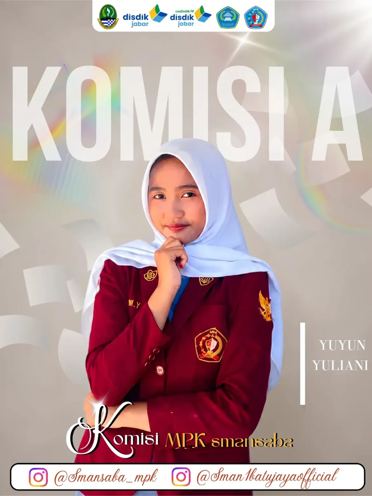

Yuyun Yuliani
Gagasan Ronawicara untuk membangun jembatan aspirasi yang lebih mudah, tercatat, dan transparan.
Bukan cuma kotak saran.
Ronawicara adalah program penampungan aspirasi, kritik, dan saran digital. Tujuannya bukan hanya menerima suara siswa, tetapi membuat prosesnya lebih terstruktur: diterima, dikaji, disampaikan, lalu diberi tanggapan.
Suaramu punya alur.
Sampaikan aspirasi dengan identitas opsional.
MPK memilah dan mengelompokkan isu yang masuk.
Isu dibawa ke ruang diskusi internal dan pihak terkait.
Perkembangan dapat dirangkum agar siswa tahu tindak lanjutnya.
Bedakan suaramu.
Punya sesuatu yang perlu didengar?
Jangan berhenti di obrolan. Sampaikan lewat jalur yang bisa dicatat dan ditindaklanjuti.
Sampaikan aspirasimu.
Aspirasi yang bergerak.
Rekap yang tampil di sini hanya data yang sudah dipilih MPK untuk dipublikasikan.
Memuat rekap publik...
Kenapa dibuat digital?
Internet bukan sekadar tempat menyebarkan informasi. Dalam Ronawicara, teknologi dipakai sebagai alat untuk membuat penyampaian aspirasi lebih mudah diakses dan proses tindak lanjut lebih mudah didokumentasikan.
Targetnya sederhana: siswa tidak hanya merasa didengar, tetapi dapat melihat bahwa suara mereka masuk ke sebuah proses.
Pertanyaan umum.
Apakah harus mencantumkan nama?
Tidak. Nama dibuat opsional agar siswa tetap memiliki ruang untuk menyampaikan masukan secara anonim.
Apakah semua aspirasi pasti diterima?
Semua masukan dapat masuk untuk direkap, tetapi tindak lanjut bergantung pada isi, konteks, kewenangan, dan pembahasan pihak terkait.
Siapa yang mengelola Ronawicara?
Program ini dirancang sebagai gagasan kerja MPK SMAN 1 Batujaya. Pengelolaan dan tindak lanjut perlu mengikuti struktur kepengurusan yang nantinya ditetapkan.
Bagaimana agar transparan?
MPK dapat membuat rekap berkala berisi kategori, jumlah, status, dan rangkuman tindak lanjut tanpa membuka identitas pengirim.